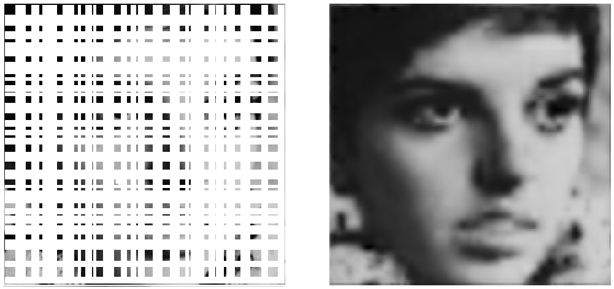

Reconstruction and pattern recognition via the Citti-Petitot-Sarti model
J.P. Gauthier, D. Prandi, U. Boscain
LSIS, Université de Toulon
Outline of the talk:
The Citti-Petitot-Sarti model
of the primary visual cortex
The mathematical model
Origin of the model:
- Hoffman (1989): structure of a contact manifold
- Petitot (1999): structure of a sub-Riemannian manifold (Heisenberg group)
then refined by:
- Citti, Sarti (2006): structure of the rototranslations of the plane \(SE(2)\)
- Agrachev, Boscain, Charlot, Gauthier, Rossi, D.P. (2010—)
Also studied by:
- Sachkov (2010-)
- Duits (2009–)
Neurophysiological fact
Structure of the primary visual cortex
Hubel and Wiesel (Nobel prize 1981) observed that in the primary visual cortex V1, groups of neurons are sensitive to both positions and directions.
Citti-Petitot-Sarti model
V1 is modeled as the projective tangent bundle: \[ PT\mathbb R^2 = \mathbb R^2\times P^1 \]
We need to discuss
Receptive fields:
How a greyscale visual stimulus \(f:\mathbb R^2\to [0,1]\) is lifted to an state on \(V1\).
Spontaneous evolution:
How a state on \(V1\) evolves via neuronal connections.
Receptive fields
Receptive fields are aimed to describe a family of neurons \(\xi=(x,y,\theta)\) in \(V1\cong PT\mathbb R^2\) with a family of functions \(\{\Psi_\xi\}_\xi\) on the image plane.
It is widely accepted that a greyscale visual stimulus \(f:\mathbb R^2\to [0,1]\) feeds a V1 neuron \(\xi\) with an extracellular voltage \(f\mapsto Lf(\xi)\) given by \[ Lf(\xi) = \langle f, \Psi_\xi \rangle_{L^2(\mathbb R^2)}. \]
A good fit for \(\Psi_\xi\) is the Gabor filter (sinusoidal wave multiplied by Gaussian function) centered at \((x,y)\) of orientation \(\theta\)

Group theoretical approach
Consider \(SE(2) = \mathbb R^2\rtimes \mathbb S^1\) with group operation \[ (x,\alpha)(y,\beta) = (x+R_\beta y,\alpha+\beta), \] where \(R_\alpha\) is the rotation of \(\alpha\).
- \(SE(2)\) is the double covering of \(PT\mathbb R^2\), so with appropriate care we can work here
- The left regular (unitary) representation \(\Lambda\) of \(SE(2)\) acting on \(\varphi\in L^2(SE(2))\) is \[\Lambda(x,\alpha)\varphi(y,\beta) = \varphi((x,\alpha)^{-1}(y,\beta)) = \varphi(R_{-\alpha}(y-x),\beta-\alpha) \]
- The quasi-regular (unitary) representation \(\pi\) of \(SE(2)\) acting on \(L^2(\mathbb R^2)\) is \[\pi(x,\alpha)f(y)=f(R_{-\alpha}(y-x))\]
Let \(L\) be a left-invariant lift such that
- \(L\) is linear,
- \(f\mapsto Lf(0)\) is densely defined and bounded.
Remarks
- V1 receptive fields through Gabor filters define a left-invariant lift.
- The function \((x,k)\mapsto \langle f,\pi(x,k)\Psi\rangle_{L^2(\mathbb H)}\) is known as the wavelet transform of \(f\) w.r.t. \(\Psi\).
Spontaneous evolution in V1
Two types of connections between neurons:
- Lateral connections: Between iso-oriented neurons, in the direction of their orientation. Represented by the integral lines of the vector field \[X_1(x,y,\theta) = \cos\theta\partial_x + \sin\theta\partial_y.\]
- Local connections: Between neurons in the same hypercolumn. Represented by the integral lines of the vector field \[X_2(x,y,\theta) = \partial_\theta.\]
Evolution in the
Citti-Petitot-Sarti model
Given two independent Wiener process \(W\) and \(Y\) on \(PT\mathbb R^2\), neuron excitation evolve according to the SDE \[ dA_t = X_1 dW_t + X_2 dY_t \]
Its generator \(\mathcal L = (\cos\theta\partial_x + \sin\theta\partial_y)^2+\partial_\theta^2\) yields to the hypoelliptic equation for the evolution of a stimulus \(\Psi\in L^2(PT\mathbb R^2)\): \[ \frac d {dt} \Psi = \mathcal L \Psi. \]
- Highly anisotropic evolution
- Natural sub-Riemannian interpretation
- Invariant under the action of \(SE(2)\)
Semi-discrete model
Conjecture: The visual cortex can detect a finite (small) number of directions only (\(\approx\) 30).
This suggests to replace \(SE(2)\) with \(SE(2,N)=\mathbb R^2\times \mathbb Z_N\) and \(PT\mathbb R^2\) with \(\mathbb R^2\times \mathbb Z_{N/2}\).
Local connections
We replace \(\partial_\theta dY_t\) by the jump Markov process \(\Theta_t\) on \(\mathbb Z_N\) defined as follows.
- The time of the first jump is exponentially distributed, with probability \(\frac 1 2\) on either side.
- We obtain a Poisson process with \[P(k\text{ jumps in }[0,t]) = \frac {(\beta t)^k}{k!} e^{-\beta t}\]
The infinitesimal generator is \(\Lambda_N\)
The evolution operator
The semi-discrete evolution operator, acting on \(\Psi=(\Psi_r)_ r \in L^2(\mathbb R^2\times \mathbb Z_N)\) is then \[ \mathcal L_N (z,r) = (A\Psi)_r (z) + (\Lambda _N\Psi(z)) _r, \] where, for \(\theta_r=\pi r/N\), \[ (A\Psi)_r (z) = \frac 1 2\left( \cos(\theta _r)\partial _x + \sin(\theta _r)\partial _y \right)\Psi _r(z), \] \[ (\Lambda_N \Psi(z))_r = \frac \beta 2 \left( \Psi _{r-1}(z)-2\Psi _r(z) + \Psi _{r+1}(z) \right). \]
Advantages
- Already naturally discretized the \(\theta\) variable.
- Invariant w.r.t. semi-discretized rototranslations \(SE(2,N)\).
Image Inpainting
Illusory contours
Anthropomorphic image reconstruction
Let \(f\in L^2(\mathbb R^2)\) with \(f\equiv 0\) on \(\Omega\subset \mathbb R^2\) be an image corrupted on \(\Omega\).
- Smooth \(f\) by a Gaussian filter to get generically a Morse function
- Lift \(f\) to \(Lf\) on \(\mathbb R^2\times \mathbb Z_N\)
- Evolve \(Lf\) through the CPS semi-discrete evolution
- Project the evolved \(Lf\) back to \(\mathbb R^2\)
Remarks
- Reasonable results for small corruptions
- Adding some heuristic procedures yield very good reconstructions
Smoothing
Even if images are not described by Morse functions, the retina smooths images through a Gaussian filter (Peichl & Wässle (1979), Marr & Hildreth (1980))
The convolution of \(f\in L^2(\mathbb R^2)\) with a two dimensional Gaussian centered at the origin is generically a Morse function.
Simple Lift
For simplicity, instead than the lift through Gabor filters we chose to lift \(f(x,y)\) to \[ Lf(x,y,r) = \begin{cases} f(x,y) & \text{ if } (\nabla f(x,y), (\cos\theta_r,\sin\theta_r))\cong 0\\ 0 & \text{ otherwise} \end{cases} \]
Example: lifting a curve
In the continuous model a curve \(t\mapsto (x(t),y(t))\) in \(\mathbb R^2\) is lifted to \(t\mapsto (x(t),y(t),\theta(t))\) curve in \(PT\mathbb R^2\), where \[\theta(t) = \arctan\left( \frac{\dot x(t)}{\dot y(t)}\right).\]
A remarkable feature
When \(f\) is a Morse function, the lift Lf is supported on a 2D manifold. (This is false if the angles are not projectivized!)
Semi-discrete evolution
The hypoelliptic heat kernel of the semi-discretized operator \(\mathcal L_N\) has been explicitly computed, but is impractical from the numerical point of view.
We use the following scheme:
- For any \(r\in\mathbb Z_N\) compute \(\widehat{Lf_r}(k)\), the Fourier transform of \(Lf(\cdot,\cdot,r)\).
- For any \(k=(\lambda\cos\alpha,\lambda\sin\alpha)\) we let \(U_k(r)\) be the solution of the decoupled ODE on \(\mathbb Z_N\) \[ \begin{cases} \frac{d}{dt}U_k = \Lambda_N U_k - \text{diag}\left( \lambda^2 \cos(\theta_r-\alpha)\right)U_k \\ U_k(r)| _ {t=0}=\widehat{Lf _ r}(k). \end{cases} \]
- For any \(r\in\mathbb Z_N\) the solution \(\Psi_r(x,y)\) is the inverse Fourier transform of \(k\mapsto U_r(k)\)
This scheme can be implemented by discretizing \(\mathbb R^2\).
A view through almost-periodic functions
To avoid discretizing \(\mathbb R^2\) we can proceed as follows: Let \(\Sigma\subset\mathbb R^2\) be the grid of pixels of the image and \(f_d:\Sigma\to [0,1]\) be the pixel values.
- Compute \(\hat f_d:\widehat\Sigma\to \mathbb C\), the discrete Fourier transform (FFT) of \(f_d\) on \(\Sigma\)
- Represent \(f_d\) as the almost-periodic function \[f_{\text{AP}}(x) = \sum_{k\in \widehat\Sigma} \hat f_d(k)e^{i\langle z, k\rangle}. \]
- Evolve \(f\) splitting the evolution in the ODE’s, for each \(k=(\lambda,\mu)\in\widehat\Sigma\), \[ \begin{cases} \frac{d}{dt}U_k = \Lambda_N U_k - 2\pi^2 \text{diag}\left( \lambda \cos\theta_r+\mu \sin\theta_r\right)U_k \\ U_k(r)| _ {t=0}=\hat f_d(k). \end{cases} \]
The evolution of \(f_{\text{AP}}\) is exact!
Projection
Given the result of the evolution \((\Psi_r)_r\), we define the reconstructed image by
\[ \tilde f(x,y) = \max_{r\in\mathbb Z_N} \Psi_r(x,y). \]
Results
Mumford Elastica Model
With the same techniques it is possible to treat the evolution equation underlying the Mumford Elastica model, which is associated with the operator \[ \mathcal L_M = X_1+X_2^2 = \cos\theta\partial_x + \sin\theta\partial_y +\partial_\theta^2 \]
Highly corrupted images reconstruction
Based upon this diffusion and certain heuristic complements, we get nice results on images with more than 85% of pixels missing.

Image recognition
Spectral invariants
Given a group \(\mathbb G\) and a representation \(\Phi\) of \(\mathbb G\) on some topological space \(X\), a complete set of invariants is a map \(f\mapsto I_f\), from \(X\) to some functional space \(\mathcal B\) such that \[ I_f=I_g \iff \exists a\in\mathbb G \text{ s.t. } f= \Phi(a)g. \] If the above holds only for \(f\) and \(g\) in some residual subset of \(X\), the \(I_f\)’s are said to be a weakly complete set of invariants.
We speak of spectral invariants whenever the \(I_f\)’s depend on the Fourier transform of \(f\).
Important cases
- Since any group acts on itself, we look for invariants for the action of the left regular representation \(\Lambda\) of \(\mathbb G\) on \(X=L^2(\mathbb G)\)
- Given a semidirect product \(\mathbb G = \mathbb H\rtimes \mathbb K\), we look for invariants for the quasi-regular representation \(\pi\) of \(\mathbb G\) on \(X=L^2(\mathbb H)\).
Plan
- Case of an abelian group (e.g. invariants on \(\mathbb R^n\) w.r.t. translations)
- Fourier transform and Pontryagin duality
- Bispectral invariants
- Case of \(SE(2,N)\) (non-compact, non-abelian semi-direct product)
- Generalized Fourier transform and Chu duality
- Bispectral invariants for \(L^2(SE(2,N))\)
- Invariants for lifts of functions in \(L^2(\mathbb R^2)\) w.r.t. semidiscretized roto-translations.
Fourier transform on abelian groups
Let \(\mathbb G\) be a locally compact abelian group with Haar measure \(d\mu\).
The dual \(\widehat{\mathbb G}\) of \(\mathbb G\) is the set of of characters of \(\mathbb G\), i.e., of continuous group homomorphism \(\lambda:\mathbb G\to \mathbb C\), \(|\lambda(\cdot)|=1\).
The Fourier transform of \(f\in L^1(\mathbb G)\cap L^2(\mathbb G)\) is the map on \(\widehat{\mathbb G}\) defined by \[ \hat f(\lambda)= \int_{\mathbb G} f(a) \, \bar\lambda(a)\,d\mu(a). \]
Since \(\widehat{\mathbb G}\) is abelian and locally compact, the Fourier transform extends to an isometry \(\mathcal F:L^2(\mathbb G) \to L^2(\widehat{\mathbb G})\) w.r.t. the Haar measure on \(\widehat{\mathbb G}\).
Fundamental property: For any \(a\in\mathbb G\), \[ f= \Lambda(a) g \iff \hat f(\lambda) = \lambda(a)\hat g(\lambda) \quad\forall\lambda\in\widehat{\mathbb G}. \]
Example: \(\mathbb R\)
It holds \(\widehat {\mathbb R} \cong \mathbb R\), where for \(\lambda\in\mathbb R\) the corresponding element of \(\widehat {\mathbb R}\) is \(\hat \lambda(x):= e^{i\lambda x}\). The above defined Fourier transform then reduces to \[\hat f(\lambda) = \int_{\mathbb R} f(x) e^{-i \lambda x}\, dx \] Then, \[f(y) = g(y-x) \quad\forall y\in\mathbb R \iff \hat f(\lambda) = e^{i\lambda x}\hat g(\lambda) \quad\forall\lambda\in{\mathbb R} \]
Remark
In this case, it is clear that \(\widehat{\mathbb R}\) is indeed a group and that \(\widehat {\widehat {\mathbb R}}\cong\mathbb R\). This is an instance of Pontryagin duality, which works on all abelian groups:
Invariants for abelian groups
Let \(\mathbb G\) be a locally compact abelian group and consider the action on \(L^2(\mathbb G)\) of the left-regular representation (e.g. for \(\mathbb G = \mathbb R\) this corresponds to translations).
The power spectrum invariants for \(f\in L^2(\mathbb G)\) w.r.t. the action of the left regular representation are the functions \[\lambda\in\widehat{\mathbb G} \mapsto I_f(\lambda)=|\hat f(\lambda)|^2.\]
These are widely used (e.g. in astronomy), but are not complete:
- Fix any \(\varphi: \widehat{\mathbb G} \to \mathbb C\) s.t. \(|\varphi(\lambda)|=1\) which is not a character of \(\widehat{\mathbb G}\),
- Let \(g = \mathcal F^{-1}( \varphi \hat f )\), so that \(I_f=I_g\),
- However, \(f\neq\Lambda(a)g\) for any \(a\in\mathbb G\), since \[f= \Lambda(a)g \iff \hat f(\lambda) = \lambda(a)\hat g(a). \] Indeed, if it was the case \(\varphi(\lambda) = \lambda(a)\) which, by Pontryagin duality, is equivalent to \(\varphi\) being a character of \(\widehat{\mathbb G}\).
What is missing in the power spectrum invariants is the phase information.
The bispectral invariants for \(f\in L^2(\mathbb G)\) w.r.t. the action of the left regular representation are the functions \[(\lambda_1,\lambda_2)\in\widehat{\mathbb G} \mapsto B_f(\lambda_1,\lambda_2)={\hat f(\lambda_1+\lambda_2)}\,\overline{\hat f(\lambda_1)}\, \overline{\hat f(\lambda_2)}.\]
Remarks
- Note that \(\lambda\mapsto \frac{B(\lambda,0)}{\hat f(0)}\) allows to recover the power spectral invariants
- The bispectral invariants are used in several areas of signal processing (e.g. to identify music timbre and texture, Dubnov et al. (1997))
Proof of weak completeness
Let \(f,g\in \mathcal G\) be compactly supported and such that \(I_f=I_g\).
- Define \(u(\lambda) = \hat g(\lambda)/\hat f(\lambda)\), which is a continuous function on an open and dense set of \(\mathbb G\) satisfying \(|u(\cdot)|\equiv 1\).
- Since the bispectral invariants coincide it holds \[u(\lambda_1+\lambda_2) = u(\lambda_1)u(\lambda_2).\]
- Since \(f,g\) are compactly supported, \(\hat f\) and \(\hat g\) are continuous and hence \(u\) can be extended to a measurable function on \(\widehat{\mathbb G}\), still satisfying the above.
- Since every measurable character is continuous, this shows that \(u\in\widehat{\widehat{\mathbb G}} \cong \mathbb G\). That is, there exists \(a\in \mathbb G\) such that \(u(\lambda)=\lambda(a)\), and hence \[\hat f(\lambda) = \lambda(a)\hat g(\lambda) \iff f = \Lambda(a)g.\]
Generalized Fourier transform
Let \(\mathbb G\) is a locally compact unimodular group with Haar measure \(d\mu\) not necessarily abelian.
The dual \(\widehat{\mathbb G}\) of \(\mathbb G\) is the set of equivalence classes of unitary irreducible representations of \(\mathbb G\).
The (generalized) Fourier transform of \(f\in L^1(\mathbb G)\cap L^2(\mathbb G)\) is the map that to \(R\in \widehat{\mathbb G}\) acting on the Hilbert space \(\mathcal H_R\) associates the Hilbert-Schmidt operator on \(\mathcal H_R\) defined by \[ \hat f(R)= \int_{\mathbb G} f(a) \, R(a)^{-1}\,d\mu(a) \in HS(\mathcal H_R). \]
There exists a measure \(d\hat\mu\) (the Plancherel measure) on \(\widehat G\) w.r.t. the Fourier transform can be extended to an isometry \(\mathcal F:L^2(\mathbb G) \to L^2(\widehat{\mathbb G})\).
Fundamental property: For any \(a\in\mathbb G\), \[ f= \Lambda(a) g \iff \hat g(R) = \hat f(R)\circ R(a) \]
Chu duality
Chu duality is an extension of the dualities of Pontryagin (for abelian groups) and Tannaka (for compact groups) to certain (non-compact) MAP groups. Here the difficulty is to find a suitable notion of bidual, carrying a group structure. See Heyer (1973).
Let \(\mathbb G\) be a topological group
- \(\text{Rep}_n(\mathbb G)\) is the set of all \(n\)-dimensional continuous unitary representations \(R\) of \(\mathbb G\) in \(\mathbb C^n\). It is endowed with the compact-open topology.
- The Chu dual of \(\mathbb G\) is the topological sum \[\text{Rep}(\mathbb G)=\bigcup_{n\succcurlyeq 1}\text{Rep}_ n(\mathbb G).\]
- \(\text{Rep}(\mathbb G)\) is second countable if \(\mathbb G\) is so.
Quasi-representations
A quasi-representation of \(\mathbb G\) is a continuous map \(Q\) from \(\text{Rep}(\mathbb G)\) to \(\bigcup_{n\succcurlyeq 1}\mathcal U(\mathbb C^n)\) such that for any \(R,R'\in \text{Rep}(\mathbb G)\) and \(U\in\mathcal U(\mathbb C^{n(R)})\)
- \(Q(R)\in\mathcal U(\mathbb C^{n(R)})\)
- \(Q(R\oplus R')=Q(R)\oplus Q(R')\)
- \(Q(R\otimes R')=Q(R)\otimes Q(R')\)
- \(Q(U^{-1}RU) = U^{-1}Q(R)U\)
- The Chu quasi-dual of \(\mathbb G\) is the union \(\text{Rep} (\mathbb G)^{\vee}\) of all quasi-representations of \(\mathbb G\) endowed with the compact-open topology.
- Setting \(E(R)=\text{Id}_{n(R)}\) and \(Q^{-1}(R)=Q(R^{-1})\), \(\text{Rep} (\mathbb G)^{\vee}\) is a Hausdorff topological group with identity \(E\).
The mapping \(\Omega:\mathbb G\to \text{Rep} (\mathbb G)^{\vee}\) defined by \(\Omega(g)(R) = R(g)\) is a continuous homomorphis, injective if the group is MAP.
Chu dual
A Moore group is a group whose irreducible representations are all finite-dimensional.
Theorem (Chu)
The following inclusions hold \[ \text{Moore groups} \subset \text{Groups with Chu duality} \subset \text{MAP groups}. \]- The group \(SE(2,N)\) is Moore (i.e. all its irreducible representations are finite-dimensional) and then it has Chu duality.
- The group \(SE(2)\) is not MAP (i.e. almost-periodic functions do not form a dense subspace of continuous functions) and hence it does not have Cuu duality.
The case of \(SE(2,N)\)
Let us consider the (non-compact, non-abelian) Moore group \(SE(2,N)=\mathbb R^2\rtimes \mathbb Z_N\).
The unitary irreducible representations fall into two classes
- Characters: Any \(\hat n\in\mathbb Z_N\) induces the one-dimensional representation \(K_n(x,k) = \hat n(k)\).
- \(N\)-dimensional representations: For any \(\lambda\in\widehat{\mathbb R^2}\setminus 0\) we have the representation that acts on \(\mathbb C^N\) as \[T^\lambda(x,k) = \text{diag }_ n \lambda(R_n x)\, S^k,\] where \(S^k\) is the shift operator \(S^k v(n) = v(n+k)\).
Since the Plancherel measure is supported on the \(N\)-dimensional representations, bispectral invariants are generalized to \(\varphi\in L^2(SE(2,N))\) as the following functions of \(\lambda_1,\lambda_2\neq 0\): \[ B_\varphi(\lambda_1,\lambda_2) = \hat\varphi(T^{\lambda_1}\otimes T^{\lambda_2})\circ \hat\varphi(T^{\lambda_1})^* \otimes \hat\varphi(T^{\lambda_2})^*. \]
The left regular representation
The proof is similar to the abelian one: Given \(f,g\in\mathcal G\) with \(B_{f}=B_g\):
- Let \(U(T^\lambda) = \hat f(T^\lambda)^{-1}\circ\hat g(T^\lambda)\) for \(\lambda\neq0\) s.t. \(\hat f(T^\lambda)\) is invertible.
- Prove that \(U(T^\lambda)\) can be extended to a quasi-representation
- Since \(SE(2,N)\) is Moore, it has Chu duality and hence there exists \((x,k)\in SE(2,N)\) s.t. \(U(T) = T(x,k)\) for any unitary representation \(T\)
- Finally, this implies \[\hat f(T) \circ T(x,k) = \hat g(T) \iff \Lambda(x,k) f = g.\]
The quasi-regular representation
Consider now the quasi-regular representation \(\pi\) acting on \(L^2(\mathbb R^2)\), which corresponds to rotation and translations.
Fixed a lift \(L:L^2(\mathbb R^2)\to L^2(SE(2,N))\) we define the bispectral invariants \(B_f\) as \(B_{Lf}\).
Proof:
Let \(f,g\in L^2(K)\) be such that \(B_f=B_g\). Then \[ B_f=B_g \iff B_{Lf}=B_{Lg} \iff Lf=\Lambda(x,k)Lg \iff f=\pi(x,k)g. \]
Unfortunately, the set \(\mathcal R\) is empty for regular left-invariant lifts:
- Let \(\omega_f(\lambda)\in \mathbb C^N\) be the vector \(\omega_f(\lambda)(k) = \hat f(R_{-k}\lambda)\).
- Since \(Lf(x,k) = \langle f,\pi(x,k) \Psi\rangle_{L^2(\mathbb R^2)}\) we have \[ \widehat{Lf}(T^\lambda) = \overline{\omega_f(\lambda)}^*\otimes \overline{\omega_\Psi(\lambda)}. \]
- Thus \(\widehat{Lf}(T^\lambda)\) has at most rank \(1\) and hence \(\mathcal R=\varnothing\).
Remark
- There exists non left-invariant lifts for which \(\mathcal R\) is residual, as the cyclic lift \[L_cf(x,k) = f(R_k x + \text{cent } f).\]
- The price to pay is that we have to quotient away the translations before the lift. This suggest the following.
Rotational bispectral invariants
The rotational bispectral invariants for \(f\in L^2(\mathbb R^2)\) are, for any \(\lambda_1,\lambda_2\neq 0\) and any \(k\in\mathbb Z_N\) the quantities \[ B_f(\lambda_1,\lambda_2,k) = \widehat{Lf}(T^{\lambda_1}\otimes T^{\lambda_2})\circ \widehat{Lf}(T^{\lambda_1})^* \otimes \widehat{Lf}(T^{R_k \lambda_2})^*. \] Observe that \(B_f\) is invariant under rotations but not under translations.
A function \(f\in L^2(\mathbb R^2)\) is weakly cyclic if \(\{S^n \omega_f(\lambda)\}_{n\in\mathbb Z _N}\) is a basis of \(\mathbb C^N\) for a.e. \(\lambda\).
Modifying the arguments used in the case of the left-regular representation, we can then prove the following.
Experimental results
In Smach et al. (2008), although the theory was not complete, some tests on standard academic databases have been carried out. They yielded results superior to standard strategies.
- ZM denotes the standard Zernike moments
- \(1^{\text{st}}\) MD are the (non-complete) power spectrum invariants \(I_f(\lambda) = \widehat{Lf}(T^\lambda)\circ \widehat{Lf}(T^\lambda)^*\)
- \(2^{\text{nd}}\) MD are the bispectral invariants
Other experimental results
Texture recognition
Let \(E\subset \widehat{\mathbb R^2}\) be countable and invariant under the action of \(\mathbb Z_N\).
A natural model for texture discrimination are almost periodic functions on \(SE(2,N)\) in the \(B_2\) Besicovitch class, i.e., \[ f(x,k) = \sum_{\substack{\lambda\in E \\ n\in\mathbb Z_N}} a(\lambda,n) e^{i\langle R_n\lambda,x\rangle} \quad\text{s.t.}\quad \sum_{\substack{\lambda\in E \\ n\in\mathbb Z_N}} |a(\lambda,n)|^2<+\infty. \]
- \(B_2\) functions are the pull-back of \(L^2\) functions on the Bohr compactification.
- The theory above can be adapted to these spaces of functions, and an analog of the weakly completeness of rotational bispectral invariants holds.
- In this space the bispectral invariants are not complete, and thus the (analog of) the above conjecture is false.
- As already mentioned, when \(E\) is finite this space can be used to exacty solve the hypoelliptic diffusion.
Remark: Setting
The considerations of this part of the talk work in the general context of a semi-direct product \(\mathbb G = \mathbb H\rtimes \mathbb K\) where
- \(\mathbb H\) is an abelian locally compact group
- \(\mathbb K\) is a finite group
- the Haar measure on \(\mathbb H\) is invariant under the action \(R:\mathbb K\to \text{Aut }\mathbb H\),
- the natural action of \(\mathbb K\) on the dual \(\widehat {\mathbb H}\) has non-trivial stabilizer only w.r.t. the identity \(\hat o\in\widehat {\mathbb H}\).
The group law on \(\mathbb G\) is non-commutative: \[ (x,k)(y,h) = (x+R_k y, k+h). \]
In our case: \(\mathbb H= \mathbb R^2\), \(\mathbb K=\mathbb Z_N\) and \(R_k\) is the rotation of \(2\pi k/N\).